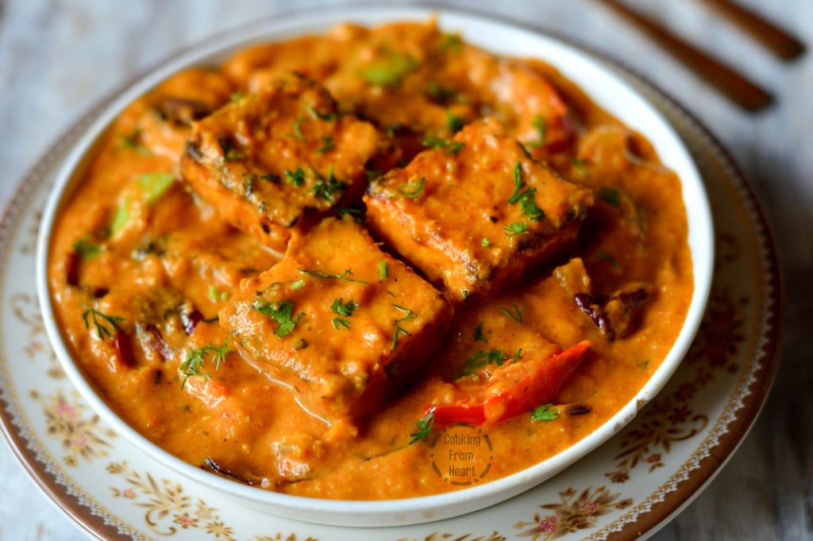

Paneer Tikka Masala Recipe

Description
Paneer Tikka Masala is a popular Indian curry where cubes of paneer (Indian cottage cheese), onions and peppers are marinated with yogurt and spices, grilled and then tossed in a creamy tomato based curry. This dish goes extremely well with butter naan or paratha or basmati rice.
There are 2 parts to this recipe- the tikka part where paneer, onions and peppers are marinated with yogurt and spices and then grilled. You can cook the tikka in tandoor, oven or in your pan. The other part of the recipe is the curry which is a smooth curry made with onions, tomatoes, cream and butter. The grilled tikka is added to the curry and then served as a main course with side of bread.
Ingredients:
For Paneer
- Paneer - 400 gm
- Salt - A pinch
- Kashmiri chilli powder (कश्मीरी मिर्च पाउडर)- ½ tsp
- Mustard Oil (सरसों का तेल) - 3 tbsp
- Kashmiri chilli powder (कश्मीरी मिर्च पाउडर)- 2 tbsp
- Salt (नमक) to taste
- Curd, Hung (दही) - ½ cup
- Ginger Garlic Paste (अदरक लहसुन का पेस्ट) - ½ tbsp
- Lemon Juice (नींबू का रस) - 1½ tbsp
- Kasoori Methi Powder (कसूरी मेथी पाउडर) - ¼ tsp
- Coriander, Chopped (धनिया) - A handful
For Masala (Gravy)
- Oil (तेल) - 3 tbsp
- Bay Leaf (तेज पत्ता) - 1 no
- Jeera (जीरा) - 2 tsp
- Cinnamon (दालचीनी) - 1 no
- Cardamom (हरी इलायची) - 4 no
- Cloves (लौंग) - 3 no
- Onion, Chopped (प्याज़) - 2 cups
- Butter (मक्खन) - 3 tbsp
- Green Chilli, Chopped (हरी मिर्च) - 1 tbsp
- Ginger Garlic Paste (अदरक लहसुन का पेस्ट) - 1 tbsp
- Water (पानी) - a dash
- Kashmiri chilli powder (कश्मीरी मिर्च पाउडर) - 2 tbsp
- Fresh Tomato Puree (टमाटर पयूरी) - 3 cups
- Kasoori Methi Powder (कसूरी मेथी पाउडर) - ½ tsp
- Garam Masala (गरम मसाला) - 1 tsp
- Coriander, Chopped (धनिया) - A handful
- Cream (Cream) - ¼ cup
How to make Paneer Tikka Masala
For Paneer Tikka
Cut paneer (cottage cheese) into large chunks of 1”x1”. Sprinkle some salt & chilli powder and keep aside for 20 mins for it to marinate.
In the meantime we start with the 2nd marinade. Pour mustard oil in a bowl, sprinkle kashmiri chilli powder and mix them up. Now add salt, hung curd, ginger garlic paste, lemon juice, kasoori methi & freshly chopped coriander. Whisk them and the marinade is ready.
After 20 mins of rest to the paneer add it to the 2nd marinade. If the curd is a bit runny then you can add a small spoon of bhuna besan to the marinade. Keep the paneer in the marinade for half hour.
-
To cook paneer you can cook it in an oven at 200c or an air fryer till it starts to brown. Alternatively heat a tawa, drizzle little oil and on a very hot pan add marinated paneer. Cook without stirring or shaking the pan. Once the paneer gets colour on the bottom, turn it over and cook the other side. Once browned turn the heat off and sprinkle chopped coriander. You can serve paneer tikka as a snack or use it in the masala which we prepare next.
For Masala
Heat oil, add bayleaf, cumin, cinnamon, cardamom and cloves. Once they splutter add chopped onions. Stir and add butter to it and cook till onions are evenly browned. Once browned turn the heat off and add green chillies & ginger garlic paste. Stir and add a dash of water. Turn on the heat again and cook the onions for another 2 mins.
Sprinkle kashmiri chilli powder and cook till oil oozes out of the masala. Pour the freshly made tomato puree with some salt and cook till the masala thickens once again. This helps to remove the raw flavour of tomatoes. Once thick add water and bring to a boil to get a thick and pouring consistency.
-
Drop the paneer tikka into the simmering masala curry and gently stir. Sprinkle kasoori methi powder, garam masala, chopped coriander and check for seasoning and adjust.
Pour cream and turn off the heat and stir. Paneer tikka masala is ready, serve it with laccha paratha or rice.
Return to Home